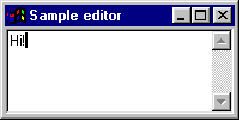

| wxPython, a cross-platform GUI Library |
| wxPython, a cross-platform GUI Library |
from wxPython.wx import *
class MainWindow(wxFrame):
""" We simply derive a new class of Frame. """
def __init__(self,parent,id,title):
wxFrame.__init__(self,parent,-4, title, size = ( 200,100),
style=wxDEFAULT_FRAME_STYLE|wxNO_FULL_REPAINT_ON_RESIZE)
self.control = wxTextCtrl(self, 1, style=wxTE_MULTILINE)
self.Show(true)
app = wxPySimpleApp()
frame = MainWindow(None, -1, "Small editor")
frame.Show(1)
app.MainLoop()
|  |
| wxPython, a cross-platform GUI Library |